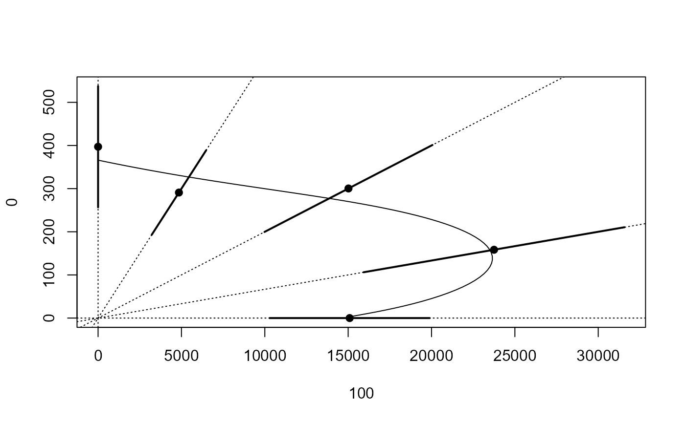

Mechlorprop and terbythylazine tested on Lemna minor
mecter.RdData consist of 5 mixture, 6 dilutions, three replicates, and 12 common controls; in total 102 onservations.
Usage
data(mecter)Format
A data frame with 102 observations on the following 3 variables.
dosea numeric vector of dose values
pcta numeric vector denoting the grouping according to the mixtures percentages
rgra numeric vector of response values (relative growth rates)
Details
The dataset is analysed in Soerensen et al (2007). The asymmetric Voelund model is appropriate, whereas the symmetric Hewlett model is not.
Source
The dataset is kindly provided by Nina Cedergreen, Department of Agricultural Sciences, Royal Veterinary and Agricultural University, Denmark.
References
Soerensen, H. and Cedergreen, N. and Skovgaard, I. M. and Streibig, J. C. (2007) An isobole-based statistical model and test for synergism/antagonism in binary mixture toxicity experiments, Environmental and Ecological Statistics, 14, 383–397.
Examples
library(drc)
## Fitting the model with freely varying ED50 values
mecter.free <- drm(rgr ~ dose, pct, data = mecter,
fct = LL.4(), pmodels = list(~1, ~1, ~1, ~factor(pct) - 1))
#> Control measurements detected for level: 999
## Lack-of-fit test
modelFit(mecter.free) # not really acceptable
#> Lack-of-fit test
#>
#> ModelDf RSS Df F value p value
#> ANOVA 71 0.033732
#> DRC model 94 0.063801 23 2.7518 0.0006
summary(mecter.free)
#>
#> Model fitted: Log-logistic (ED50 as parameter) (4 parms)
#>
#> Parameter estimates:
#>
#> Estimate Std. Error t-value p-value
#> b:(Intercept) 1.1263e+00 1.2130e-01 9.2851 6.153e-15 ***
#> c:(Intercept) -4.1327e-02 2.1251e-02 -1.9447 0.0548 .
#> d:(Intercept) 3.0006e-01 5.8249e-03 51.5127 < 2.2e-16 ***
#> e:100 1.5090e+04 2.4007e+03 6.2856 1.015e-08 ***
#> e:75 3.1667e+04 5.2165e+03 6.0705 2.673e-08 ***
#> e:50 3.0038e+04 5.0377e+03 5.9627 4.321e-08 ***
#> e:25 1.9395e+04 3.2661e+03 5.9382 4.818e-08 ***
#> e:0 1.9855e+04 3.5090e+03 5.6583 1.646e-07 ***
#> ---
#> Signif. codes: 0 '***' 0.001 '**' 0.01 '*' 0.05 '.' 0.1 ' ' 1
#>
#> Residual standard error:
#>
#> 0.02605256 (94 degrees of freedom)
## Plotting isobole structure
isobole(mecter.free, exchange = 0.02)
## Fitting the concentration addition model
mecter.ca <- mixture(mecter.free, model = "CA")
#> Warning: Using formula(x) is deprecated when x is a character vector of length > 1.
#> Consider formula(paste(x, collapse = " ")) instead.
#> Control measurements detected for level: 999
## Comparing to model with freely varying e parameter
anova(mecter.ca, mecter.free) # rejected
#>
#> 1st model
#> fct: CA model
#> pmodels: ~~~1, ~1, ~1, ~I(1/(pct/100)) - 1, ~I(1/(1 - pct/100)) - 1
#> 2nd model
#> fct: LL.4()
#> pmodels: ~1, ~1, ~1, ~factor(pct) - 1
#>
#> ANOVA table
#>
#> ModelDf RSS Df F value p value
#> 1st model 97 0.091446
#> 2nd model 94 0.063801 3 13.577 0.000
## Plotting isobole based on concentration addition
isobole(mecter.free, mecter.ca, exchange = 0.02) # poor fit
## Fitting the Hewlett model
mecter.hew <- mixture(mecter.free, model = "Hewlett")
#> Warning: Using formula(x) is deprecated when x is a character vector of length > 1.
#> Consider formula(paste(x, collapse = " ")) instead.
#> Control measurements detected for level: 999
## Comparing to model with freely varying e parameter
anova(mecter.hew, mecter.free) # rejected
#>
#> 1st model
#> fct: Hewlett model
#> pmodels: ~~~1, ~1, ~1, ~I(1/(pct/100)) - 1, ~I(1/(1 - pct/100)) - 1, ~1
#> 2nd model
#> fct: LL.4()
#> pmodels: ~1, ~1, ~1, ~factor(pct) - 1
#>
#> ANOVA table
#>
#> ModelDf RSS Df F value p value
#> 1st model 96 0.074836
#> 2nd model 94 0.063801 2 8.1286 0.0006
## Plotting isobole based on the Hewlett model
isobole(mecter.free, mecter.hew, exchange = 0.02) # poor fit
## Fitting the Voelund model
mecter.voe<-mixture(mecter.free, model = "Voelund")
#> Warning: Using formula(x) is deprecated when x is a character vector of length > 1.
#> Consider formula(paste(x, collapse = " ")) instead.
#> Control measurements detected for level: 999
## Comparing to model with freely varying e parameter
anova(mecter.voe, mecter.free) # accepted
#>
#> 1st model
#> fct: Voelund model
#> pmodels: ~~~1, ~1, ~1, ~I(1/(pct/100)) - 1, ~I(1/(1 - pct/100)) - 1, ~1, ~1
#> 2nd model
#> fct: LL.4()
#> pmodels: ~1, ~1, ~1, ~factor(pct) - 1
#>
#> ANOVA table
#>
#> ModelDf RSS Df F value p value
#> 1st model 95 0.065481
#> 2nd model 94 0.063801 1 2.4755 0.1190
## Plotting isobole based on the Voelund model
isobole(mecter.free, mecter.voe, exchange = 0.02) # good fit
